불꽃효도의 시작
23시 50분 코펜하겐행 비행기
약 13시간 비행 후 2시간 휴식, 그리고 베를린으로 출발
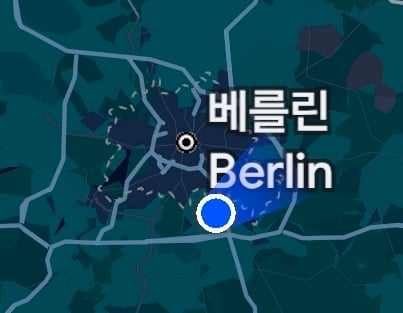
30년 만에 다시 찾은 베를린
첫날은 타임라인 키는거 깜빡해서 사진이나 방문 순서가 와리가리일수도
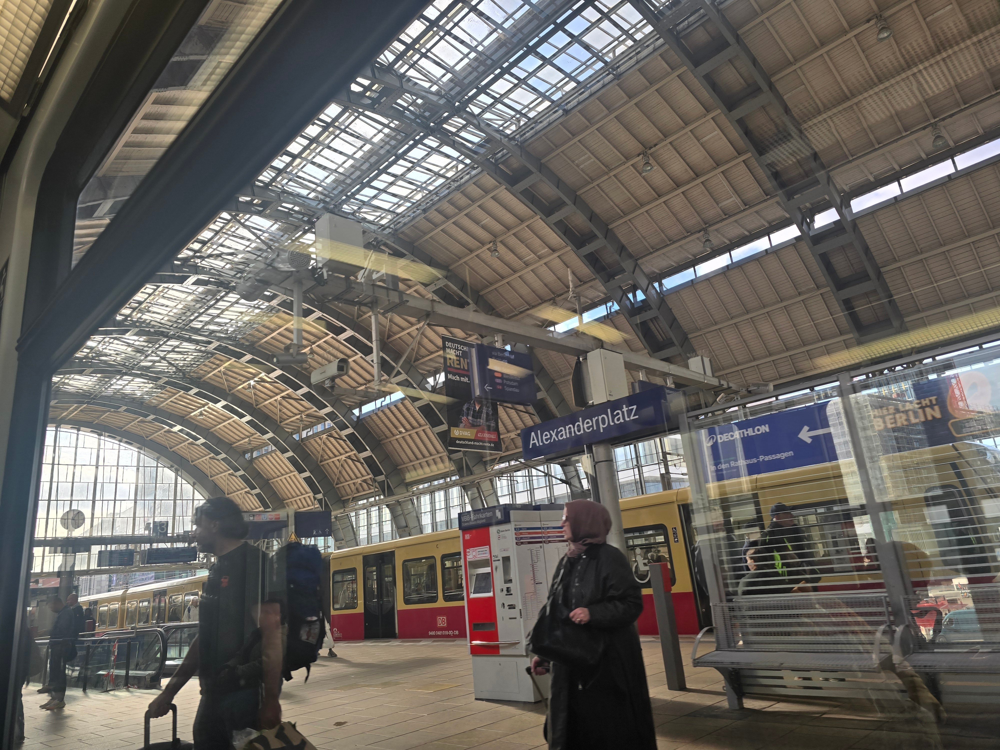
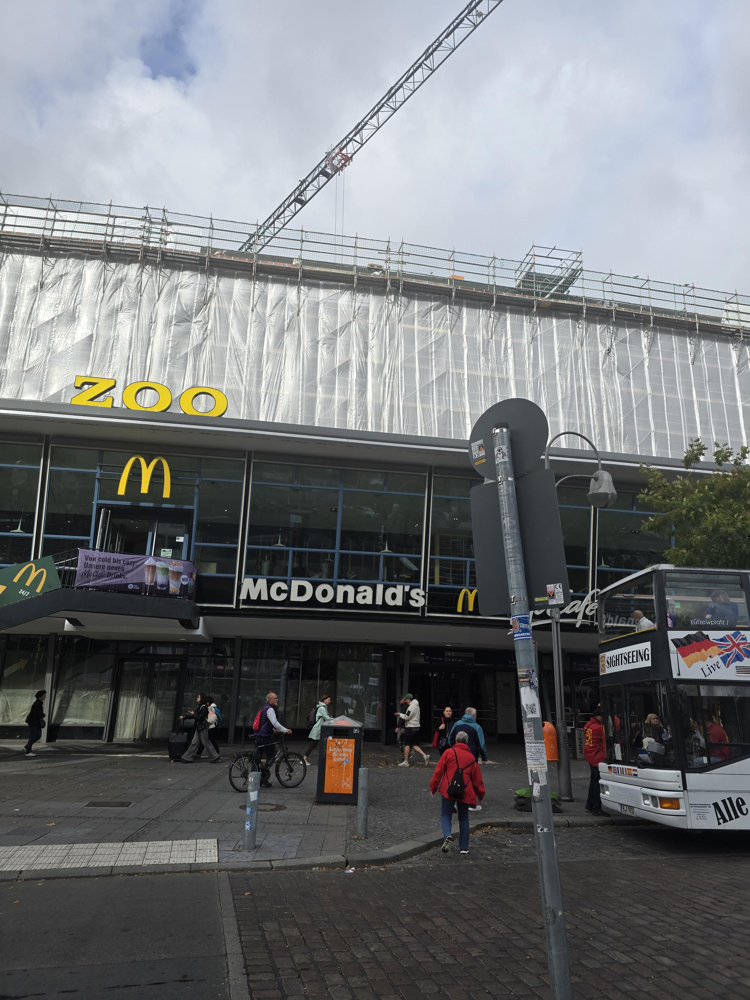
알렉산더플라쯔를 지나 쭈어에 도착
호텔가는 길은 생략
아부지가 다니셨던 베를린 공대
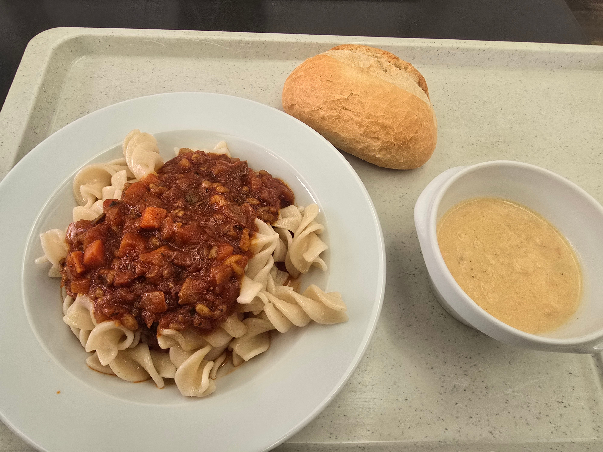
의 멘자(학생식당)에서 파스타랑 수프, 브레첸으로 한따까리
기내식으로 개박살난 파스타를 먹었던게 이유인지 아주 맛있었다
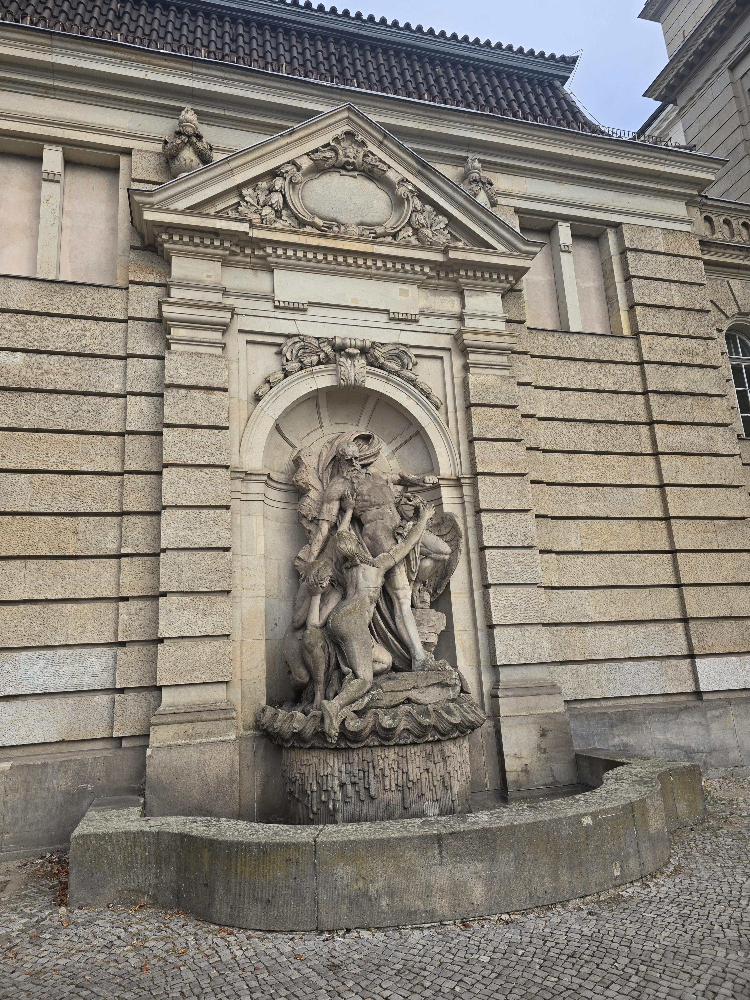
유럽특) 걍 지나다니는데 다 예술작품들임ㄹㅇ
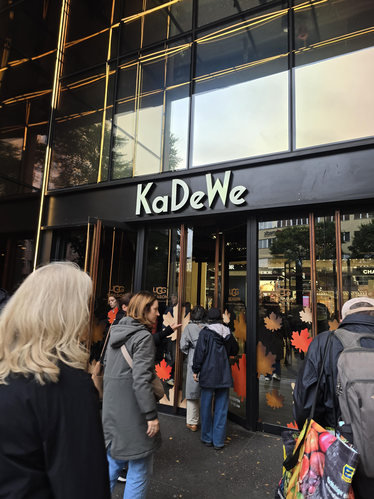
유명한 카데베 백화점
밥도 조졌겠다 첫날 쇼핑ㄱ
근데 딱히 살건 없어서 아이쇼핑만 하고 런함
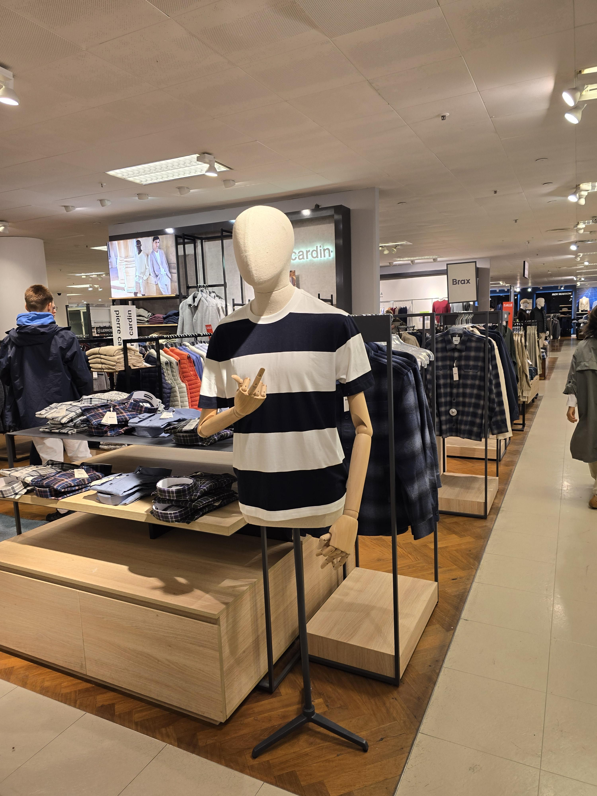
사람 사는 데 다 똑같더라
내가 해놓은거 아님
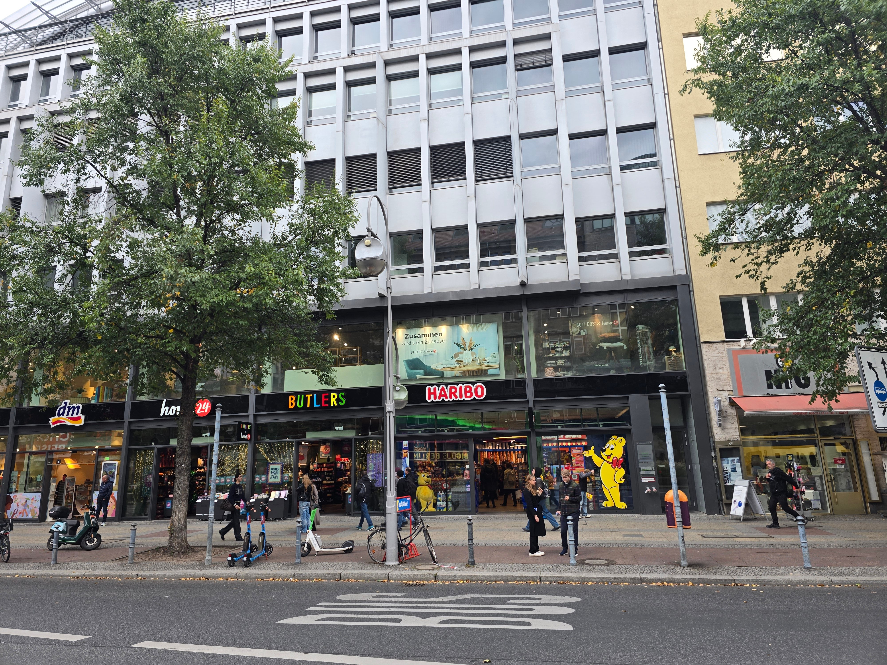
하리보
절대 못참지
사무실 동료들에게 줄 키링 선물이랑
어렸을때 입에 달고 살았던 마왐(MAOAM) 한무더기 사고 다음 장소로
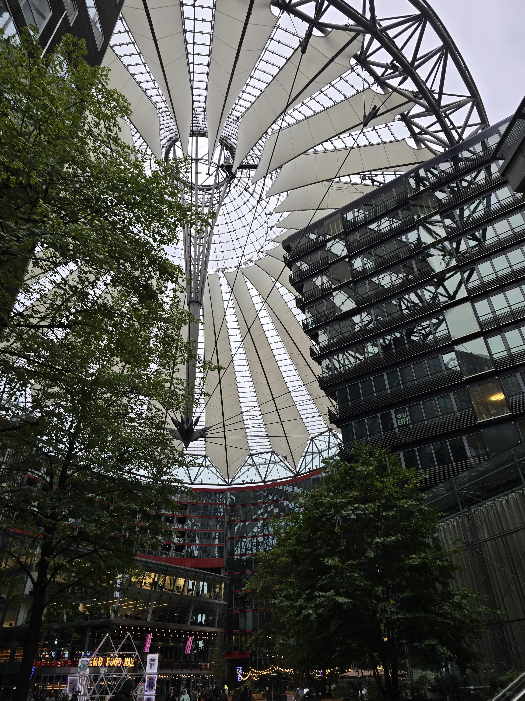
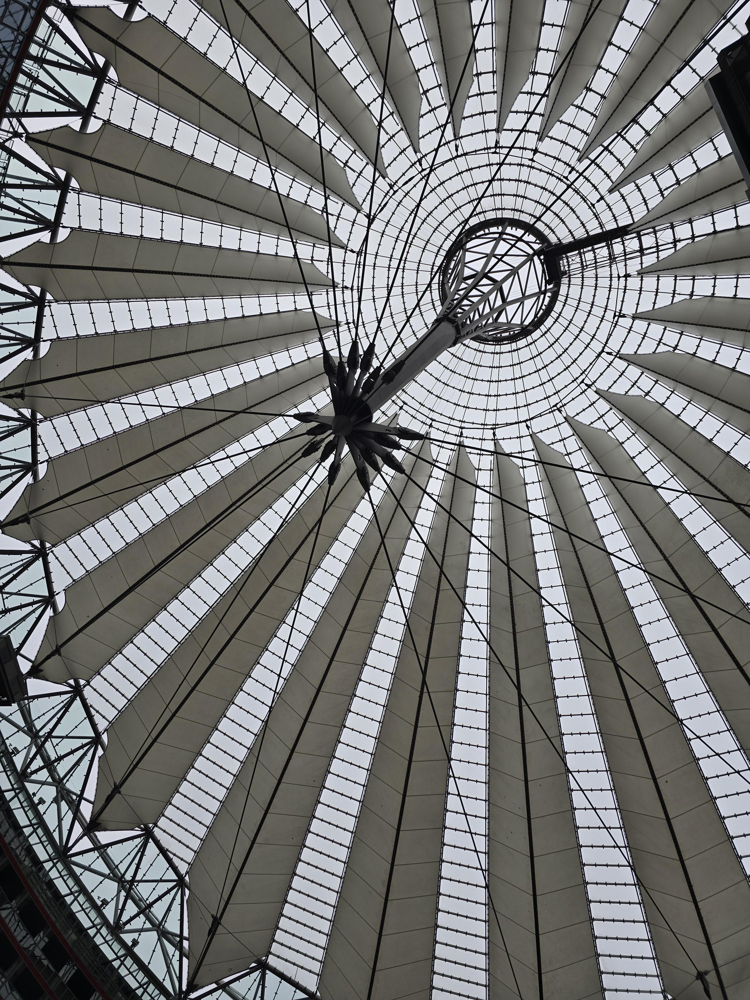
개신기하게 생긴 소니 센터(손흥민 아님)
국민연금이 이걸로 돈 낭낭하게 벌었다더라(자세한건 몰?루)
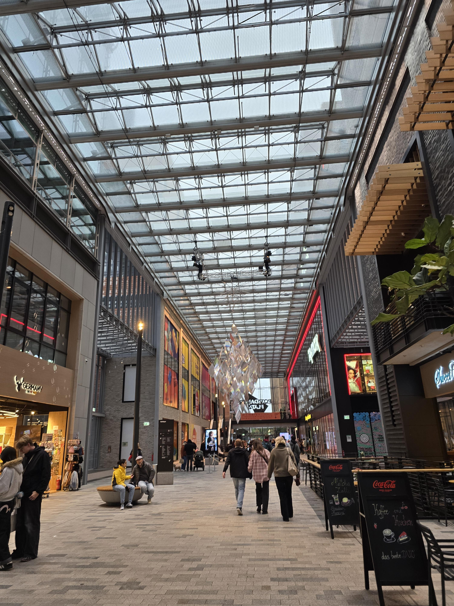
포츠담 플라쯔에 들어가서
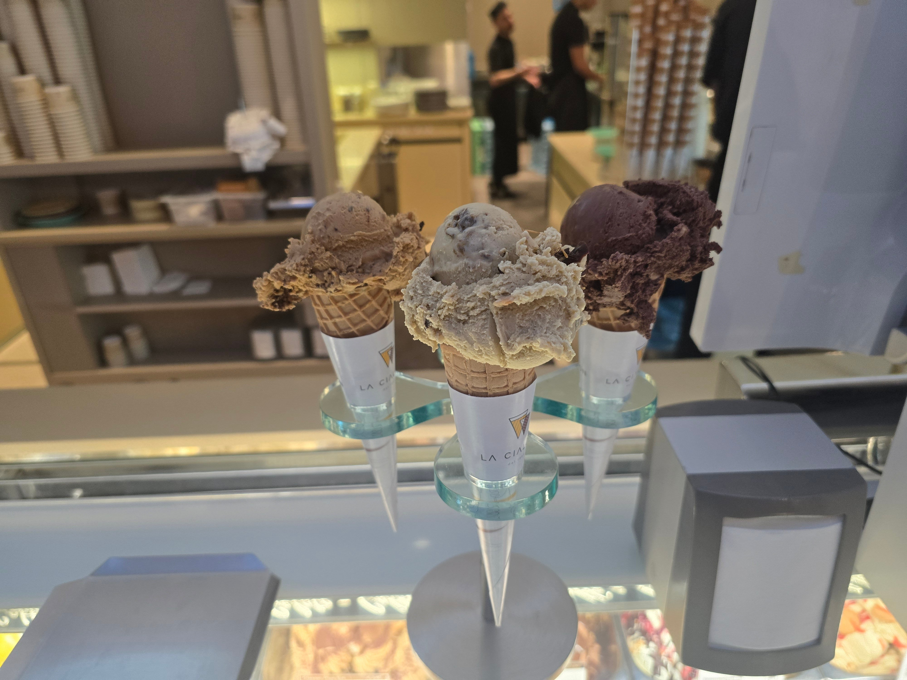
존맛탱 아이스크림 얻어먹고 하루 마무리
이집이 진짜 쫀득하고 막 시발 아무튼 존나 맛있었음
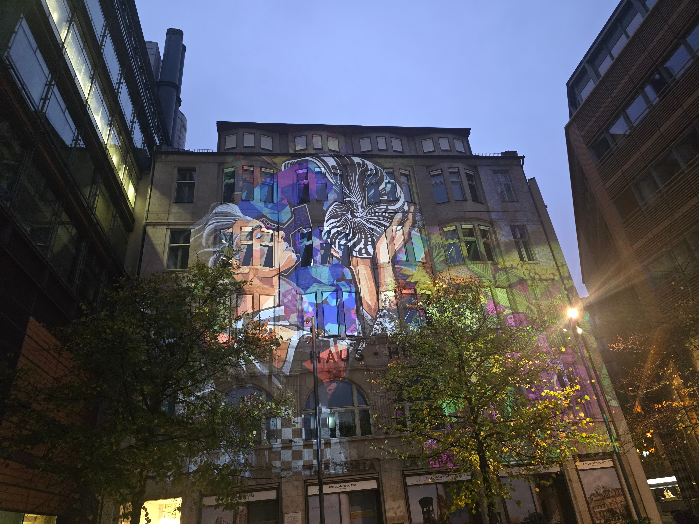
이 날은 뭐하는건가 와 신기하다 하고 말았는데
이런걸 하고있더라
2편에 계속


먹었어서 > 먹어서